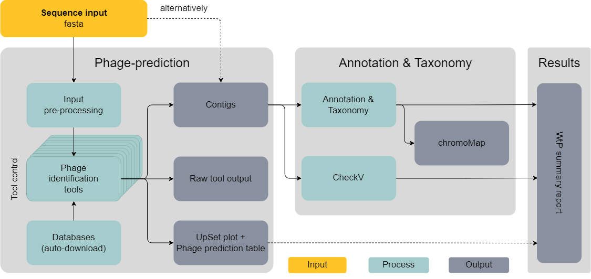

What the Phage: A scalable workflow for the identification and analysis of phage sequences
M. Marquet, M. Hölzer, M. W. Pletz, A. Viehweger, O. Makarewicz, R. Ehricht, C. Brandt
doi: https://doi.org/10.1101/2020.07.24.219899
System Requirements
| Components | minimum | recomended |
|---|---|---|
| OS | Linux like | Linux like |
| Cores | 4 | 8 |
| Memory | 4 GB RAM | 8 GB RAM |
| Storage | 75 GB available space | 128-256 GB available space |
What the Phage
Phages are among the most abundant and diverse biological entities on earth. Identification from sequence data is a crucial first step to understand their impact on the environment. A variety of bacteriophage identification tools have been developed over the years. They differ in algorithmic approach, results and ease of use. We, therefore, developed “What the Phage” (WtP), an easy-to-use and parallel multitool approach for phage identification combined with an annotation and classification downstream strategy, thus, supporting the user’s decision-making process when the phage identification tools are not in agreement to each other. WtP is reproducible and scales to thousands of datasets through the use of a workflow manager (Nextflow).
Example result output
Under the hood

Figure 3: This plot shows a simplified Flowchart of WtP for better understanding of what's going on behind the curtain
Included tools
Identification
Annotation & classification
Other tools
.